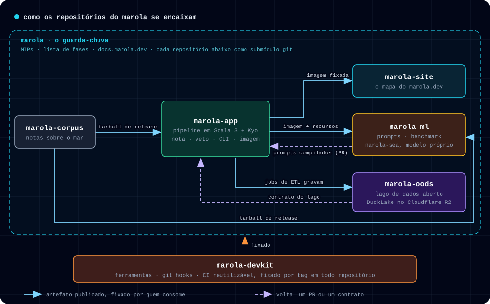

o que é o marola
imagine um amigo que conhece bem o mar. você pergunta "dá pra nadar amanhã? que horas?". ele olha as ondas, o vento e a maré, vê se a água está própria para banho e até se tem água-viva por perto. depois te diz o melhor horário, e por quê.
esse amigo é o marola. por enquanto, ele é um mapa das praias de Florianópolis, do Rio de Janeiro e de Salvador, e cada praia tem uma nota para hoje e outra para amanhã. ele não inventa nada: todo número vem de dados públicos. quando o assunto é risco, quem decide são regras simples, que qualquer pessoa pode ler. e quando não sabe, ele diz "sem dados".
por que aberto e sem fins lucrativos
boa parte dos dados do mar brasileiro está na mão de empresas e instituições privadas. sem esses dados, não dá para prever a qualidade da água, os desastres climáticos nem os acidentes ambientais.
por isso o marola é aberto e não tem fins lucrativos. a promessa é devolver tudo para todo mundo, do melhor jeito que a gente conseguir. se a gente fosse só mais uma empresa, ficaria difícil pedir esses dados para quem está com eles.
balneabilidade primeiro
o saneamento básico no Brasil ainda está longe de ser resolvido. o assunto é grande demais para esta página, mas é ele que define por onde o marola começa: pela qualidade da água. antes do surfe, da pesca ou do mergulho, vem a pergunta "posso entrar nessa água?".
uma das ideias é um ranking nacional de balneabilidade, que já está em discussão aberta. a gente ainda vai escrever muito sobre isso: quem cuida bem da água, quem cuida mal, como e por quê.
um super app da água
a gente vive a era dos super apps, e o marola vai acabar virando um super app da água. um lugar só para tudo o que envolve a água: a praia, o mar, a balneabilidade e os riscos. não um app que te dá ferramentas para você se virar, e sim um que te entrega a resposta pronta.
a Sequoia Capital, um dos maiores fundos de investimento do Vale do Silício, chama essa mudança de "serviço como software". o software deixa de vender a ferramenta e passa a entregar o trabalho feito.
"A copilot sells the tool. An autopilot sells the work."
por que código aberto
em 2026, não tem mais motivo para fazer código fechado. com a IA, nunca foi tão fácil criar uma funcionalidade nova, e o código já não é o segredo. o Brasil precisa é de projetos de longo prazo, que não dependam do calendário eleitoral nem morram quando o governo muda. com o código aberto, o projeto segue vivo mesmo depois que quem começou vai embora.
parcerias sem dinheiro
o marola precisa de computação em nuvem: espaço para guardar os dados e placas de vídeo para treinar e rodar os modelos. mesmo sem fins lucrativos, ele aceita parcerias com empresas que cedam esses recursos, ou dados, sem passar dinheiro. em troca, a empresa ganha um crédito discreto no site. nada de anúncio, banner ou rastreamento.
como o marola é montado
pense numa cozinha de restaurante. em vez de um cozinheiro fazer tudo sozinho, cada bancada cuida de uma tarefa. no marola, cada bancada é um repositório de código:
- marola-app é o fogão: junta a previsão do mar, as praias e a balneabilidade, e calcula a nota.
- marola-site é o salão: o mapa que você está usando.
- marola-corpus é o caderno de receitas: as anotações sobre o mar, cada uma com a sua fonte.
- marola-ml é a cozinha de testes: ali a IA treina e é provada antes de ir para o fogão.
- marola-oods é a despensa: um arquivo aberto com o histórico das praias e da água.
- marola-devkit é a caixa de ferramentas que todas as bancadas usam.
- marola, o repositório guarda-chuva, é o caderno do chef: os planos, as regras e o lugar de cada bancada.

o nome disso é monólito distribuído. monólito porque funciona como uma peça só: um projeto, um plano, um jeito de trabalhar, e as versões das partes andam juntas. distribuído porque cada parte fica no seu próprio repositório, com os seus testes, e lança as suas próprias versões.
a gente fez assim por dois motivos. o primeiro: a gente escreve boa parte do código com agentes de IA. eles trabalham melhor quando enxergam o projeto inteiro de cima, com um plano e regras por escrito, e mexem numa parte pequena de cada vez. o segundo: cada parte também anda sozinha, até certo ponto. quem só quer os dados de balneabilidade pode usar o marola-oods sem o resto, e um erro numa bancada não derruba as outras. uma parte nunca usa o código da outra direto: ela pega uma versão publicada e só troca de versão quando decide trocar.
como funciona a nota
cada praia cai numa das cinco faixas da legenda do mapa: ≥70 bom, 40–69 razoável, 1–39 ruim, 0 imprópria, ou sem dados quando alguma fonte não respondeu. a nota leva em conta o mar, o vento, as ondas, a maré e a qualidade da água. um modelo de linguagem escreve um resumo curto, e uma segunda revisão automática confere se o resumo bate com os números. a IA só explica: ela nunca muda uma nota nem derruba um alerta.
de onde vêm os dados
as praias vêm do OpenStreetMap, a previsão do mar e do tempo vem do Open-Meteo, e a balneabilidade, dos boletins oficiais do IMA/SC, do INEA (RJ) e do INEMA (BA). são fontes públicas e gratuitas. o mapa de fundo é do Mapbox, feito a partir do OpenStreetMap. por enquanto, só as camadas de praias e de balneabilidade estão ligadas. vento, ondas e as imagens de satélite da NASA (GIBS) chegam em breve.
privacidade
o marola não usa cookies nem rastreamento próprio. o mapa de fundo é a exceção. para desenhar o mapa, o seu navegador busca o estilo, os pedaços do mapa e as fontes nos servidores do Mapbox. esses servidores recebem o seu endereço IP e contam cada vez que o mapa abre, porque é assim que o Mapbox cobra. para essa contagem, o Mapbox guarda no seu navegador um identificador aleatório, sem nome nem e-mail. quando você escolhe uma camada de satélite, as imagens vêm dos servidores da NASA, que também veem o seu endereço IP. a opção "perto de mim" usa a sua localização só dentro do navegador, e ela nunca sai dali.
agradecimentos
a ideia do botão de emergência veio do swell-floripa, de Carlos Toledo (@carlostoledo1891).
o som das ondas é uma gravação de Luftrum (freesound, licença CC BY 3.0), que Porrumentzio editou em loop para o Blanket.
como ajudar
use o mapa e avise quando ele errar. conte também o que você vê na água, como água-viva, ou se está faltando alguma praia. abra uma issue, em português ou em inglês. o código, os planos e cada decisão estão no GitHub. a documentação mostra o que já funciona e o que ainda é plano.